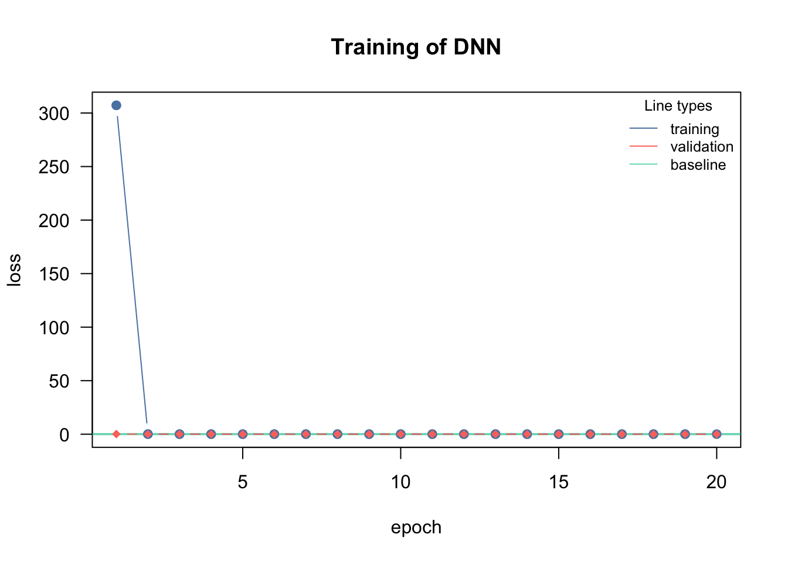
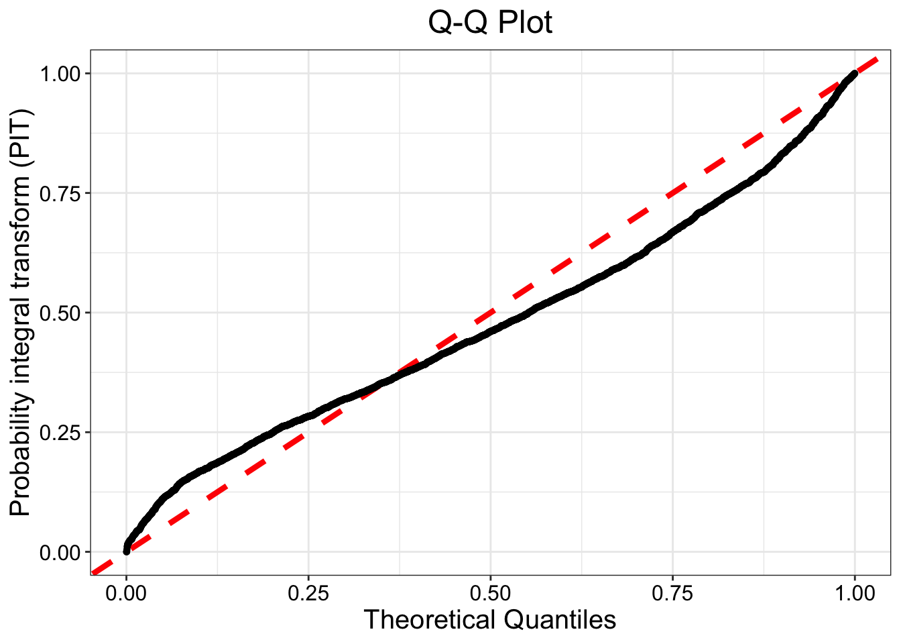

rm(list = ls())
data("AUDem", package = "qgam")
meanDem <- AUDem$meanDem
library(lubridate) # need this for date-time tinkering
months <- month(meanDem$date) #might throw warnings, can be ignored
years <- year(meanDem$date) #might throw warnings, can be ignored
Y <- meanDem$demAI for Statistical Learning — Week 3
Week 3 - Assignment 3: Model Comparison Australia Electricity Demand
Introduction
Basics and setup
The goal of this assignment is to compare three different models for estimating the median and 95th percentile of electricity consumption:
- The Normal distribution model from Assignment 2 (reuse results from Assignment 2)
- A quantile regression (QR) model which simultaneously estimates both quantiles
- The estimate of the quantiles from SPQR
The data processing pipeline is identical from Assignment 2.
The quantile regression loss function is:
library(torch); library(cito); library(SPQR)
q2 = torch_tensor(0.5)
q3 = torch_tensor(0.95)
loss_func = function(pred, true,...) {
l2 = torch_max(q2*(true[,1,drop=FALSE]-pred[,1,drop=FALSE]),
other = (1.0-q2)*(pred[,1,drop=FALSE]-true[,1,drop=FALSE]))
l3 = torch_max(q3*(true[,2,drop=FALSE]-pred[,2,drop=FALSE]),
other = (1.0-q3)*(pred[,2,drop=FALSE]-true[,2,drop=FALSE]))
return(l2+l3)
}The QR loss is the same one from last week, but I dropped the lowest quantile from it. Covariate cleanup as before:
X <- meanDem[,c(2,5,7)]
X <- cbind(X,months,years)
dem_df <- cbind(Y,X)Question 1 - Fitting models
Fit \(Y\sim .\) using QR and SPQR defined above. You should be able to scrounge together code for both models from what we covered in class. Guidelines for each model:
- Have at least \(0.2\) validation split in each case
- No need to have a separate test set
- For QR - use the training/validation loss as the metric for choosing your final model
- For SPQR - you can use the loss as the metric, but you can also use the
plotGOFfunction to assess goodness of fit.
Example for SPQR
library(SPQR)
control <- list(epochs = 300, lr = 0.001, batch.size = 100)
spqr_fit <- SPQR(X = X, Y = Y, method = 'MLE', normalize = T, n.hidden = c(50,50),
activation = 'relu', verbose = F, control = control, seed = 303)
#summary(spqr_fit)
#plotGOF(spqr_fit)Question 2 - Getting predictions
Do the following steps for each of your models:
Subset the data for December. Let’s just compare the summer data.
Get predictions for each model for each season. There should therefore be 2 different prediction dataframes. Save them as
qr_12andspqr_12.
Question 3 - Getting quantiles
The way you get quantiles for each model will be different. I will give the broad outline of the process below for both models.
- QR
You should have 2 columns in the predictions for each month - the first column will correspond to the median, the second will correspond to the the 0.95 quantile. You can save your eventual outputs as qr_12_50, qr_12_95.
- SPQR
The predict function will give you a dataframe with 2 columns, just like for QR
spqr_pred <- predict(spqr_fit, X = as.matrix(X), type = 'QF', tau = c(0.50,0.95))
dim(spqr_pred)Note how I needed to use as.matrix in the predict statement but not in the fit statement. That’s a bug, not a feature. Separate out the 2 colums in 2 different vectors - spqr_12_50, spqr_12_95.
Question 4 - Model comparison
Import in your predictions from Assignment 2. You can either do it using the load function, or by going to the environment tab and use the “load workspace” option.
We will do a total of 6 tests (3 methods x 2 quantile levels). Use wilcox.test as before with the following options
xandyvectorspaired = Talternative = 'two.sided'
What should be in the final submission?
Report the:
- Final architectures you chose for each model
- A table for the median, and a table for the 0.95 quantile. Each table should have the form:
| Gaussian | QR | SPQR | |
|---|---|---|---|
| Gaussian | X | ||
| QR | X | ||
| SPQR | X |
The diagonals will be empty. The off diagonals will have the p-values from the tests.
Answer 1 - Fitting models
Quantile Regression with Train/Validation Loss. Denoted as Model 2 (m2)
m2 <- cito::dnn(cbind(Y,Y)~., data = dem_df,
lr = 0.01,
validation = 0.2,
loss = loss_func,
lambda = 0.000, alpha = 0.5,
epochs = 20L, hidden = c(30L, 30L),
activation = "relu", verbose = TRUE, plot = TRUE)Loss at epoch 1: training: 307.195, validation: 0.138, lr: 0.01000
Loss at epoch 2: training: 0.080, validation: 0.047, lr: 0.01000
Loss at epoch 3: training: 0.049, validation: 0.053, lr: 0.01000
Loss at epoch 4: training: 0.059, validation: 0.046, lr: 0.01000
Loss at epoch 5: training: 0.046, validation: 0.047, lr: 0.01000
Loss at epoch 6: training: 0.047, validation: 0.050, lr: 0.01000
Loss at epoch 7: training: 0.052, validation: 0.046, lr: 0.01000
Loss at epoch 8: training: 0.046, validation: 0.050, lr: 0.01000
Loss at epoch 9: training: 0.054, validation: 0.046, lr: 0.01000
Loss at epoch 10: training: 0.054, validation: 0.065, lr: 0.01000
Loss at epoch 11: training: 0.050, validation: 0.056, lr: 0.01000
Loss at epoch 12: training: 0.053, validation: 0.047, lr: 0.01000
Loss at epoch 13: training: 0.049, validation: 0.055, lr: 0.01000
Loss at epoch 14: training: 0.048, validation: 0.047, lr: 0.01000
Loss at epoch 15: training: 0.049, validation: 0.046, lr: 0.01000
Loss at epoch 16: training: 0.046, validation: 0.046, lr: 0.01000
Loss at epoch 17: training: 0.045, validation: 0.046, lr: 0.01000
Loss at epoch 18: training: 0.052, validation: 0.056, lr: 0.01000
Loss at epoch 19: training: 0.048, validation: 0.047, lr: 0.01000
Loss at epoch 20: training: 0.057, validation: 0.046, lr: 0.01000The model’s loss falls steeply within as few as the first 10 epochs, so it stands to reason that we do not need that many epochs.
Using SPQR, denoted as model 3 (m3):
control <- list(epochs = 300, lr = 0.001, batch.size = 100, valid.pct = 0.2)
m3 <- SPQR(X = X, Y = Y, method = 'MLE', normalize = T, n.hidden = c(50,50),
activation = 'relu', verbose = F, control = control, seed = 303)Assessing SPQR model’s goodness of fit:
plotGOF(m3)Warning: Using `size` aesthetic for lines was deprecated in ggplot2 3.4.0.
ℹ Please use `linewidth` instead.
ℹ The deprecated feature was likely used in the SPQR package.
Please report the issue at <https://github.com/stevengxu/SPQR/issues>.
The shape of the QQ-plot suggests that the model fit the data reasonably well, in spite of a small “S” shape in the data points.
Answer 2 - Getting Predictions
Predictions:
dem12 <- dem_df[months == 12,]qr_12 <- predict(m2,dem12[,-1]) # QR approach
spqr_12 <- predict(m3, X = as.matrix(dem12[,-1]), type = "QF", tau = c(0.50,0.95)) # SPQR approach
str(qr_12) num [1:279, 1:2] 0.656 0.656 0.656 0.656 0.656 ...str(spqr_12) num [1:279, 1:2] 0.581 0.603 0.623 0.634 0.634 ...
- attr(*, "dimnames")=List of 2
..$ X : NULL
..$ tau: chr [1:2] "50%" "95%"
Answer 3 - Getting Quantiles
50% and 95% quantiles for QR:
qr_12_50 <- qr_12[,1]
str(qr_12_50) num [1:279] 0.656 0.656 0.656 0.656 0.656 ...qr_12_95 <- qr_12[,2]
str(qr_12_95) num [1:279] 0.875 0.875 0.875 0.875 0.875 ...50% and 95% quantiles for SPQR:
spqr_12_50 <- spqr_12[,1]
str(spqr_12_50) num [1:279] 0.581 0.603 0.623 0.634 0.634 ...spqr_12_95 <- spqr_12[,2]
str(spqr_12_95) num [1:279] 0.634 0.679 0.688 0.692 0.692 ...
Answer 4 - Model Comparison
Note: Loading Gaussian model from Assignment 2.
Importing the results from Assignment 2 as objects:
load("Assignment2_results.RData")
gaussian_12_50 <- m1_12_50
rm(m1_12_50)
# Generating 0.95 quantile predictions with the estimated
# Gaussian parameters from the model
gaussian_12_95 <- m1_12_95
rm(m1_12_95)Model comparisons:
# Gaussian - QR Dec 50
wilcox.test(x = gaussian_12_50, y = qr_12_50, alternative = 'two.sided', paired = T)
Wilcoxon signed rank test with continuity correction
data: gaussian_12_50 and qr_12_50
V = 39060, p-value < 2.2e-16
alternative hypothesis: true location shift is not equal to 0# Gaussian - QR Dec 95
wilcox.test(x = gaussian_12_95, y = qr_12_95, alternative = 'two.sided', paired = T)
Wilcoxon signed rank test with continuity correction
data: gaussian_12_95 and qr_12_95
V = 39060, p-value < 2.2e-16
alternative hypothesis: true location shift is not equal to 0# Gaussian - SPQR Dec 50
wilcox.test(x = gaussian_12_50, y = spqr_12_50, alternative = 'two.sided', paired = T)
Wilcoxon signed rank test with continuity correction
data: gaussian_12_50 and spqr_12_50
V = 39060, p-value < 2.2e-16
alternative hypothesis: true location shift is not equal to 0# Gaussian - SPQR Dec 95
wilcox.test(x = gaussian_12_95, y = spqr_12_95, alternative = 'two.sided', paired = T)
Wilcoxon signed rank test with continuity correction
data: gaussian_12_95 and spqr_12_95
V = 39060, p-value < 2.2e-16
alternative hypothesis: true location shift is not equal to 0# QR - SPQR Dec 50
wilcox.test(x = qr_12_50, y = spqr_12_50, alternative = 'two.sided', paired = T)
Wilcoxon signed rank test with continuity correction
data: qr_12_50 and spqr_12_50
V = 38728, p-value < 2.2e-16
alternative hypothesis: true location shift is not equal to 0# QR - SPQR Dec 95
wilcox.test(x = qr_12_95, y = spqr_12_95, alternative = 'two.sided', paired = T)
Wilcoxon signed rank test with continuity correction
data: qr_12_95 and spqr_12_95
V = 39060, p-value < 2.2e-16
alternative hypothesis: true location shift is not equal to 0The test results suggest that, for both the median and the 0.95 quantile, the Gaussian, QR and SPQR predictions differ statistically from each other.
Final deliverables
Model architectures:
For the Gaussian model from Assignment 2, we used 3 hidden layers, with 100 nodes each, 30 epochs and 0.2 as the validation fraction.
For the QR model, we used 2 hidden layers with 30 nodes each, 20 epochs, learning rate of 0.01, “relu” activation functions, and 0.2 as the validation fraction.
For the SPQR model, we used 2 hidden layers with 50 nodes each, 300 epochs, learning rate of 0.001, batch size of 100, and 0.2 as the validation fraction.
Median p-values:
| Gaussian | QR | SPQR | |
|---|---|---|---|
| Gaussian | X | 2.2e-16 | 2.2e-16 |
| QR | 2.2e-16 | X | 2.2e-16 |
| SPQR | 2.2e-16 | 2.2e-16 | X |
0.95 quantile p-values:
| Gaussian | QR | SPQR | |
|---|---|---|---|
| Gaussian | X | 2.2e-16 | 2.2e-16 |
| QR | 2.2e-16 | X | 2.2e-16 |
| SPQR | 2.2e-16 | 2.2e-16 | X |